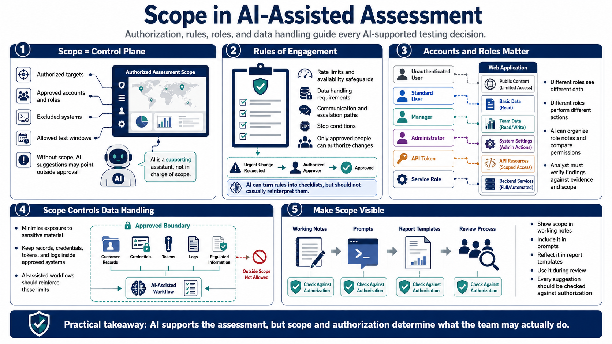

Defining Scope and Rules of Engagement
Connecting to LMS... Progress: in progress

Narration
Scope is the control plane for an AI-assisted assessment. Before using AI to plan, summarize, or reason about testing activity, the team should know which targets are authorized, which accounts and roles may be used, which systems are excluded, and which test windows apply. Without scope, AI-generated suggestions may sound useful while pointing the assessor toward activity that is not approved.
Rules of engagement should describe rate limits, data handling rules, communication paths, escalation rules, and stop conditions. They should also identify who can approve changes if the assessment reveals something urgent or if a planned activity could affect availability. The AI assistant can help turn these rules into checklists and reminders, but it should not reinterpret them casually.
Accounts and roles are especially important in web application work. A tester may have an unauthenticated user, standard user, manager, administrator, API token, or service role. Each role can see different data and perform different actions. AI can help organize role notes and compare expected permissions, but the analyst must verify the results against scope and evidence.
Scope also controls data handling. If the assessment might touch customer records, credentials, tokens, logs, or regulated information, the workflow should minimize exposure and keep sensitive material inside approved systems. AI-assisted workflows should reinforce these limits. A practical rule is to make scope visible in the working notes, prompts, report templates, and review process so every suggestion is checked against authorization.